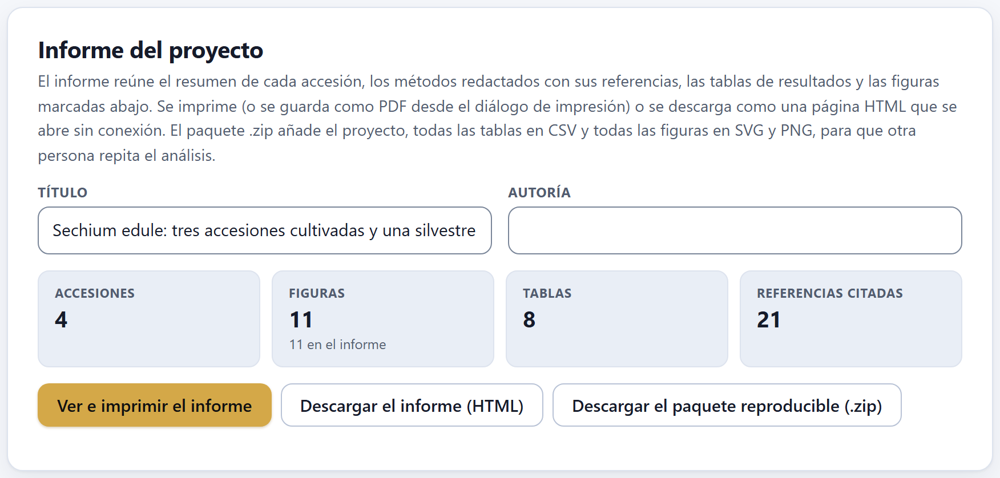
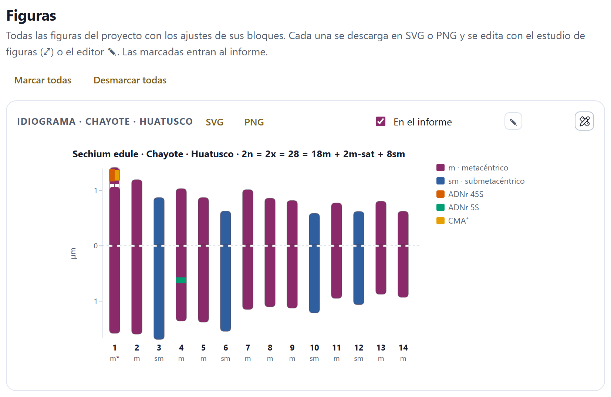
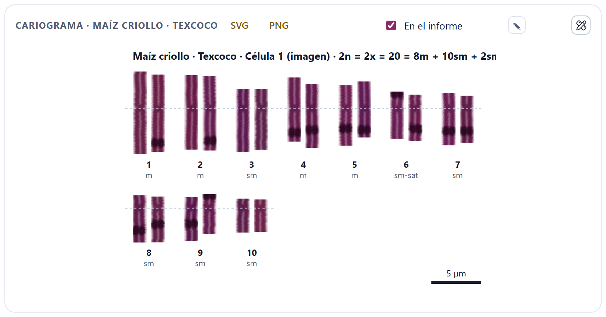
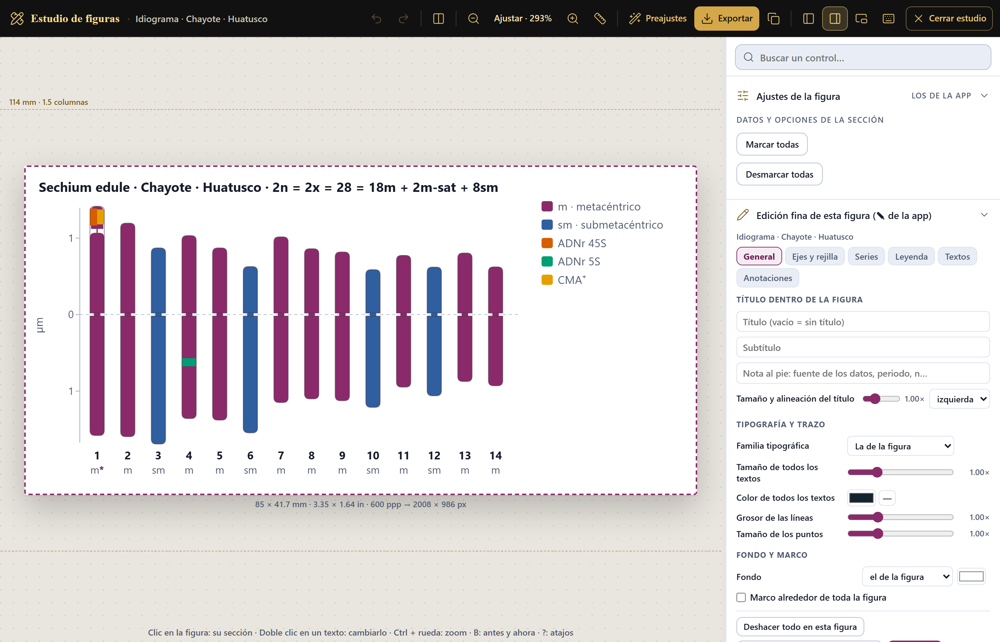
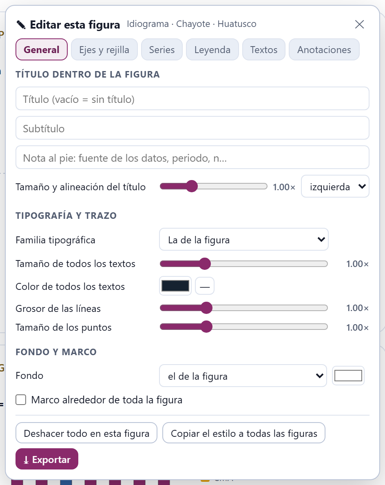
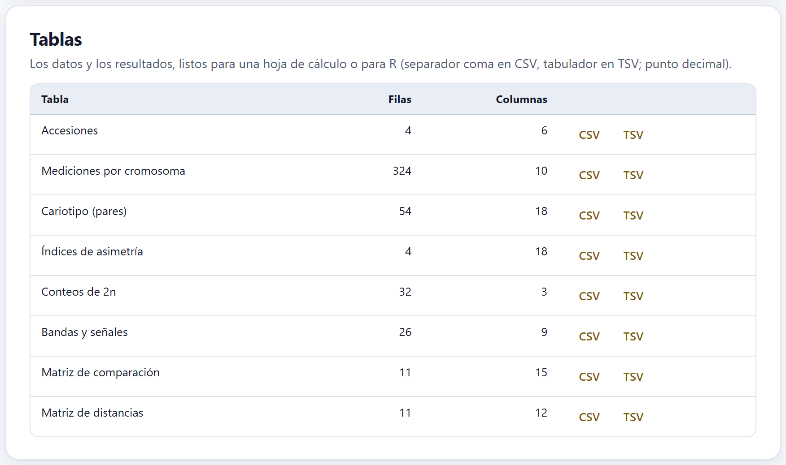
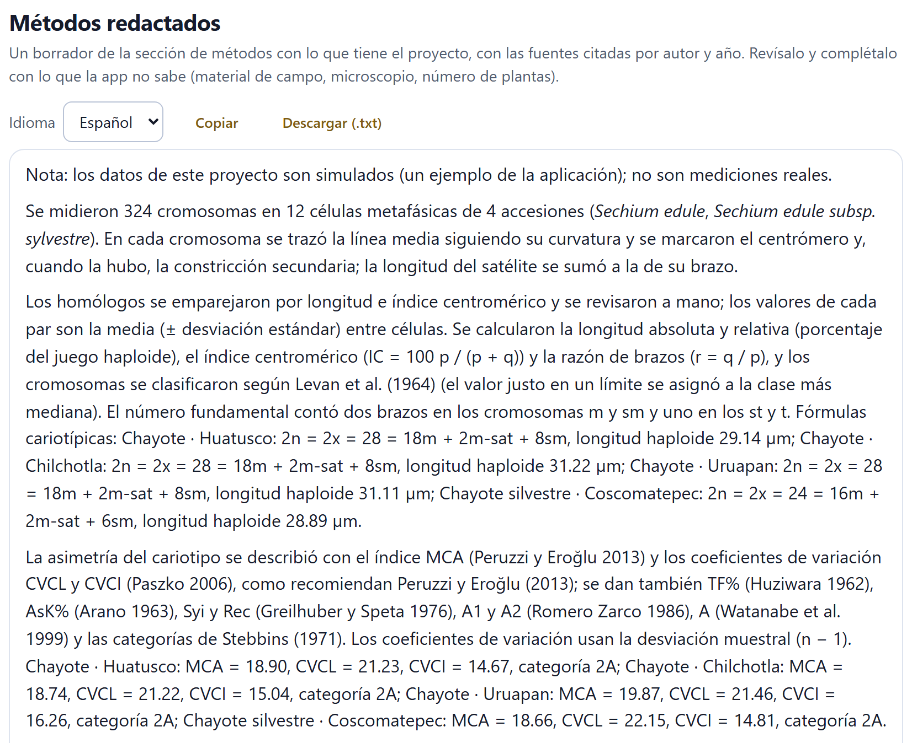

El final del recorrido: lo que se lleva a la tesis, al artículo o al expediente. El bloque reúne todas las figuras que dibujaron los demás, entre ellas el cariograma recortado de la imagen; deja descargar cada tabla de datos y de resultados; redacta un borrador de los métodos con sus referencias, en español o en inglés; arma un informe para imprimir, y empaqueta todo en un archivo .zip para que otra persona pueda repetir el análisis.
El Bloque 10 tiene cuatro tarjetas: Informe del proyecto, Figuras, Tablas y Métodos redactados. Nada se calcula aquí por primera vez: todo sale de lo que el proyecto ya tiene, con los ajustes que dejaste en cada bloque. Si cambias algo en otro bloque y vuelves, el Bloque 10 se rehace con el cambio. Las figuras de este capítulo se hicieron con el ejemplo del chayote (sechium), que tiene cuatro accesiones, señales, coordenadas y un árbol; el cariograma, con el del maíz (zea), el único ejemplo con imágenes.
Un documento con el resumen de cada accesión, los métodos, las tablas de resultados, las figuras marcadas y las referencias, listo para imprimir o para guardar como página.
La tarjeta tiene dos campos: Título, que trae el título del proyecto (con un ejemplo, el del ejemplo), y Autoría, vacío al abrir. Los dos se guardan en el proyecto. Debajo, cuatro recuadros dicen qué va a entrar: las Accesiones, las Figuras (y cuántas están marcadas para el informe), las Tablas y las Referencias citadas en los métodos.

Tres botones lo sacan:
informe_ y el título), que se abre sin conexión en cualquier navegador.El informe empieza con el título, la autoría, la fecha y la versión de la app («CytogeneticsPro 1.0.0»). Si el proyecto es un ejemplo, una nota advierte que los datos son simulados. Siguen estas partes, cada una sólo si el proyecto tiene con qué llenarla:
| Parte | Qué lleva |
|---|---|
| Resumen | Una fila por accesión: taxón, 2n (la moda de los conteos, o el del cariotipo), fórmula, longitud haploide, MCA, CVCL, categoría de Stebbins y 2C en pg. |
| Métodos | Los párrafos de la sección 10.5, en el idioma de la interfaz. |
| Resultados | El cariotipo de cada accesión (par, p, q y longitud con su desviación, longitud relativa, IC, r y tipo); los índices de asimetría; la meiosis (células, quiasmas por célula y por bivalente, índice de recombinación, % con multivalentes); la viabilidad del polen con su intervalo de Wilson; el contenido de ADN (2C, 1Cx y Mpb); la prueba de Allium; los sitios por juego de cada sonda, y la matriz de distancias de la comparación. |
| Figuras | Las marcadas en la tarjeta Figuras, numeradas, con los colores del tema claro. |
| Referencias | Las obras citadas en los métodos, en orden alfabético. |
Con el chayote, los resultados traen el cariotipo de las cuatro accesiones, la asimetría, las bandas y señales y la comparación; no hay meiosis, citometría ni prueba de Allium porque el ejemplo no las tiene.
Un archivo .zip con el proyecto y todo lo que la app calculó con él: lo que un revisor, un coautor o tu director de tesis necesita para repetir el análisis.
Mientras se arma, la app muestra la espera «Armando el paquete» con su avance, porque cada figura se convierte también a PNG; al terminar descarga el archivo y avisa «Paquete listo: … archivos.». Con el chayote, el paquete se llama cytogeneticspro_Sechium_edule_tres_accesiones.zip y trae 35 archivos:
| Archivo | Qué es |
|---|---|
LEEME.txt | En español y en inglés: qué es el paquete, cómo repetir el análisis, la lista de archivos y la cita de la app. |
proyecto_Sechium_edule_tres_accesiones.json | El proyecto completo, con las imágenes dentro; se abre con Abrir un proyecto (Ctrl + O). |
informe.html | El informe de la sección 10.1. |
metodos_es.txt · methods_en.txt | Los métodos redactados en los dos idiomas. |
tablas/ (8 archivos .csv) | Todas las tablas de la sección 10.4. |
figuras/ (11 .svg y 11 .png) | Todas las figuras de la galería, marcadas o no, en vector y en imagen al doble de resolución. |
Para repetir el análisis basta el archivo del proyecto: al abrirlo, la app recalcula todos los resultados a partir de los datos y los ajustes guardados. Las tablas, las figuras y el informe van para quien quiera revisar sin abrir la app. Los archivos van dentro del .zip sin comprimir: los textos y los SVG pesan poco, y el paquete se abre con cualquier programa de archivos comprimidos.
Todo se arma en el navegador y se descarga en tu carpeta de descargas. Si las fotomicrografías no son tuyas o están sin publicar, recuerda que viajan dentro del archivo del proyecto: compártelo con el mismo cuidado que las imágenes.
La galería de todas las figuras del proyecto, cada una con sus descargas, su casilla para el informe y sus dos herramientas de edición.
La galería junta, en este orden, el idiograma de cada accesión con cariotipo (haploide, en µm, en color y con sus marcas), el cariograma recortado de cada accesión que tenga imágenes trazadas, las categorías de Stebbins, el diagrama MCA × CVCL (con más de una accesión), los histogramas del citómetro del Bloque 6 y las figuras de la comparación del Bloque 8. Con el chayote son 11: los cuatro idiogramas, Stebbins, MCA × CVCL, el dendrograma, el biplot de componentes principales, los idiogramas en paralelo, el árbol con los números cromosómicos y el mapa de citotipos. Si el proyecto no tiene figuras, la tarjeta dice «El proyecto todavía no tiene figuras: abre un ejemplo o mide células en el Bloque 2.».

1 2 3 4 5Cada figura se descarga con SVG, un vector que se agranda sin perder nitidez y se edita en cualquier programa de dibujo, o con PNG, una imagen al triple de resolución de la pantalla. Los dos salen con los colores del tema claro aunque la app esté en el oscuro. La casilla En el informe decide si la figura entra al informe; el recuadro Figuras de la tarjeta del informe se actualiza al instante. Las casillas no se guardan en el proyecto: al abrir otro, todas vuelven a estar marcadas.
El cariograma es la figura clásica de un artículo de citogenética: los cromosomas de una célula recortados de la fotografía, enderezados y ordenados por pares. La app lo arma sola con la primera célula de la accesión que tenga imagen y todos sus cromosomas trazados, con su centrómero, y agrupados en el Bloque 3. Endereza cada cromosoma a lo largo de su trazo, pone los dos homólogos juntos, ordena los pares como el cariotipo, alinea los centrómeros en una línea punteada y escribe debajo el número y el tipo de cada par. Los pares van en renglones de siete (de ocho, si hay más de doce), con una barra de escala al final.

Si ninguna célula de una accesión cumple las condiciones —no tiene imagen, o le falta el trazo o el centrómero a algún cromosoma—, esa accesión no tiene cariograma; el idiograma, que sólo necesita las medidas, sí aparece.
El botón del lápiz y la regla, en la esquina de cada figura, abre el estudio de figuras, el mismo en todas las aplicaciones de la suite: la figura en el centro, a su tamaño de impresión, y los controles a la derecha. Abajo de la figura se lee su tamaño final; arriba, una línea punteada marca un ancho de revista.

La barra de arriba deshace y rehace, acerca y aleja la figura (Ajustar la deja del tamaño de la pantalla), aplica Preajustes de un clic y guarda los propios, y con Exportar la descarga al ancho de una o dos columnas de revista o a uno libre, con la resolución que pidas, en PNG, SVG, PDF vectorial o TIFF. A la derecha, Buscar un control… encuentra cualquier ajuste por su nombre; Ajustes de la figura reúne los controles de la tarjeta donde vive la figura, y Edición fina de esta figura es el editor ✎ dentro del estudio. En la figura, un clic lleva a los controles de esa parte y un doble clic en un texto deja cambiarlo. Cerrar estudio vuelve a la app.
El botón ✎ abre, sin salir de la página, un panel flotante que trabaja sobre esa figura. Sus pestañas son General, Ejes y rejilla, Series, Leyenda, Textos y Anotaciones.

En General se escriben un Título (vacío = sin título), un Subtítulo y una nota al pie dentro de la figura, y se ajustan el tamaño y la alineación del título, la Familia tipográfica, el Tamaño de todos los textos, el Color de todos los textos, el Grosor de las líneas, el Tamaño de los puntos, el Fondo y un Marco alrededor de toda la figura. Las demás pestañas cambian los ejes, los colores de cada serie, el lugar de la leyenda, cualquier texto y las anotaciones: notas, letras de panel y flechas que se arrastran sobre la figura, y líneas o bandas en un valor del eje. Deshacer todo en esta figura la devuelve a como la dibujó la app; Copiar el estilo a todas las figuras aplica los mismos ajustes a las demás, y Exportar la descarga. Las ediciones se recuerdan en el navegador y se vuelven a aplicar cuando la figura se redibuja.
Las figuras usan las letras instaladas en tu computadora; la app no descarga ninguna. Si mandas un SVG a otra persona, puede verse con otra letra parecida en su equipo. Para que se vea igual en todas partes, exporta en PDF vectorial o en PNG desde el estudio.
Todas las tablas del proyecto, con su número de filas y de columnas, y dos botones: CSV, separado por comas, y TSV, separado por tabuladores. Las dos usan el punto decimal y se guardan en UTF-8 con marca de orden de bytes, para que una hoja de cálculo lea bien los acentos y la µ; se abren igual en una hoja de cálculo o en R.

| Tabla | Archivo | Columnas |
|---|---|---|
| Accesiones | accesiones | nombre, taxón, localidad, latitud, longitud, x |
| Mediciones por cromosoma | mediciones | accesión, taxón, célula, cromosoma, p, q, satélite, brazo del satélite, unidad (µm o px) y origen (trazo o a mano) |
| Cariotipo (pares) | cariotipo | par, células, p, q, longitud, longitud relativa e índice centromérico con sus desviaciones, razón de brazos, clase, satélite y unidad |
| Índices de asimetría | asimetria | 2n, THL y los doce índices, la categoría de Stebbins y el modo de cálculo |
| Conteos de 2n | conteos | accesión, célula y 2n |
| Bandas y señales | senales | par, homólogo, brazo, posición, tamaño, sonda, célula y región |
| Matriz de comparación | matriz_comparacion | las variables del Bloque 8 para cada accesión o taxón, con su origen |
| Matriz de distancias | distancias | la matriz cuadrada de la comparación |
Una tabla aparece sólo si el proyecto tiene sus datos: con el maíz de ejemplo, que no tiene comparación, son siete. Cada bloque tiene también sus propias descargas (el cariotipo en el Bloque 3, los índices en el 4, las tablas de conteo de los Bloques 5 a 8); las de aquí son las mismas, juntas.
Un borrador de la sección de métodos con lo que tiene el proyecto, con cada método citado por autor y año y las referencias completas al final.
El menú Idioma elige Español o English; al abrir sigue el idioma de la interfaz, y una vez que lo cambias se queda como lo dejaste. Copiar deja el texto en el portapapeles («Métodos copiados.») y Descargar (.txt) lo guarda como metodos.txt o methods.txt.

Los párrafos salen de lo que hay en el proyecto, uno por tema, y sólo si hay datos: la medición (cuántos cromosomas, células y accesiones, y cómo se trazaron); el cariotipo (cómo se emparejaron los homólogos, qué se calculó, la clasificación con su convenio de límites, cómo se contó el número fundamental y las fórmulas); la asimetría (los índices recomendados, los demás y el tipo de desviación); el número cromosómico (la moda de las células contadas); la meiosis, la citometría y la prueba de Allium; las bandas y señales; la comparación (variables, distancia, agrupamiento, correlación cofenética, componentes y evolución del número), y un párrafo final con la versión de la app. Con el chayote son ocho párrafos y 21 referencias; por ejemplo, el de la comparación dice que la correlación cofenética fue r = 0.867, que los dos primeros componentes resumen 87.0 % de la varianza y que el costo mínimo de la evolución del número fue 11, con n = 11 en la raíz.
La app escribe qué se hizo con los datos que tiene, no lo que no sabe: de dónde vino el material, cuántas plantas se usaron, qué microscopio y qué cámara, el pretratamiento y la tinción. Tampoco sabe por qué elegiste una clasificación o un índice. Completa el texto con eso, quita lo que no vayas a informar y ajusta la redacción a la revista. Si el proyecto es un ejemplo, la primera línea lo advierte: bórrala sólo cuando los datos sean tuyos.
| Si la revista pide un ancho de figura… | exporta desde el estudio a ese ancho y con la resolución que pida (300 o 600 ppp). |
| Si publicas el cariograma… | elige como primera célula la mejor metafase: la app recorta la primera que tenga todos sus cromosomas trazados y agrupados. |
| Si el informe sólo debe llevar algunas figuras… | Desmarcar todas y marca las que quieras antes de imprimir. |
| Si usas los métodos redactados… | completa el material, el equipo y las razones de tus decisiones. |
| Siempre… | guarda el paquete reproducible junto a la tesis o al artículo: es la prueba de cómo se obtuvo cada número. |
Son guías para entregar, no leyes: las instrucciones de la revista o de tu programa de posgrado mandan.
«El proyecto todavía no tiene figuras». Abre un ejemplo o mide células en el Bloque 2; sin cariotipo no hay idiogramas. «Todavía no hay tablas.» El proyecto está vacío. No aparece el cariograma. Ninguna célula de la accesión tiene imagen con todos sus cromosomas trazados, con centrómero y agrupados en el Bloque 3. «No se pudo copiar; usa «Descargar».» El navegador no dejó usar el portapapeles: descarga el .txt. «No se pudo armar el paquete: …» Suele ser falta de memoria con imágenes muy grandes; vuelve a intentarlo cerrando otras pestañas, o guarda el proyecto con Ctrl + S y descarga las tablas y figuras por separado. El informe no se imprime. Usa Descargar el informe (HTML) y ábrelo para imprimirlo desde ahí.